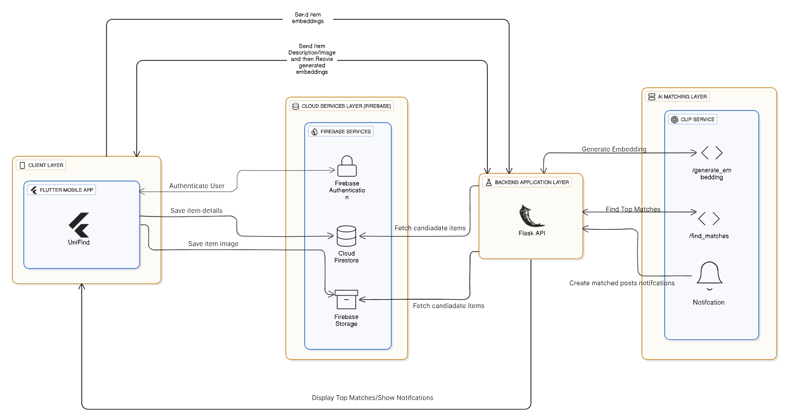

Revolutionizing how UOB students report and recover lost items with AI-powered matching and real-time notifications.
Losing items is a common issue on campus, yet the current ways of reporting and recovering them are slow, confusing, and mostly manual. To address these problems, this project introduces UniFind, which is a smart and easy to use mobile application created to streamline the lost and found processes at the University of Bahrain and to help students reclaim their items. One of its key features is an AI-powered matching engine that generates accurate item matches based on the details and image of the items. In addition, the app enables users to report items, browse and search posts, get real-time notifications to track potential matches, and to communicate together using an in-app chatting feature. All in all, UniFind provides a reliable, intelligent, and user-friendly solution that greatly improves the lost and found experience on campus.
The main goals of UniFind is to focus on improving the efficiency, accuracy, and usability of campus lost and found systems.
To develop a mobile application that allows students to easily report, browse, and manage lost and found items.
To implement an AI-powered matching mechanism that compares images and descriptions to identify potential matches.
To enable secure in-app communication between users to verify ownership and arrange item recovery.
To analyze system limitations and propose future improvements for scalability and performance.
UniFind was built using a structured system design, collaborative tools, and an iterative development methodology tailored for AI-driven systems.
The architecture shows how the mobile app, cloud backend, and AI matching service interact to support reporting, matching, notifications, and communication.
Version control and collaborative source code management.
Used for Dart and Python development with GitHub integration.
Cross-platform development and testing for Android and iOS.
UI wireframes, interactive prototypes, and personas.
Project scheduling and timeline planning.
Requirement gathering and survey-based analysis.
Creation of ERDs, DFDs, and system flow diagrams.
Task management, sprint planning, and progress tracking.
Shared storage and document synchronization.
Meetings, discussions, and team coordination.
UniFind was developed using the Agile SDLC model, enabling continuous iteration, testing, and refinement throughout the project lifecycle.

UniFind integrates multiple technologies across development, artificial intelligence, and cloud services to deliver a scalable and intelligent lost and found system.
The following results demonstrate how UniFind operates in real scenarios, showcasing the system’s core functionality, improvements, and validation.
Users can browse all lost and found items in a centralized feed.
A short demonstration of UniFind followed by a step-by-step overview of how the system operates.
Report a lost or found item by adding details, descriptions, photos, and location. The AI analyzes the information to identify possible matches.
The AI engine compares items using both visual and textual similarity to generate accurate match suggestions.
When a potential match is found, users receive real-time notifications with relevant match details.
Users communicate through the in-app chat to verify ownership and arrange item recovery securely.
This project is a Final Year Senior Project completed during Semester 1 of the Academic Year 2025/2026 at the College of Information Technology — University of Bahrain.
Lead Developer
A Software Engineering student who co-led the development of UniFind, focusing on core functionality, app logic, and overall system flow.
Lead Developer
A Computer Science student who co-led the development of UniFind, contributing to the app’s interface, user experience, and main feature implementation.
Project Supervisor
Providing guidance and expertise throughout the development process.